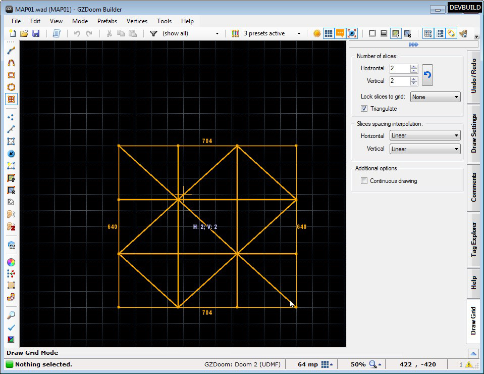

This mode lets you draw grids.
Menu path: Mode -> Draw Grid.
Action category: Drawing.
Default key: none.
Additional actions: Increase Subdivision Level, Decrease Subdivision Level, Increase Corners Bevel, Decrease Corners Bevel.
You can use the side panel or "Increase/Decrease Subdivision Level" and "Increase/Decrease Corners Bevel" actions to change the number of horizontal and vertical slices.
Check "Lock slices to grid" to match slices number to current grid size.
Check "Triangulate" if you want to create triangles instead of quads:
